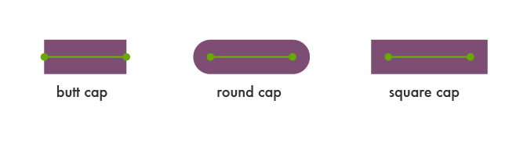

| 属性名称 | 属性描述 |
|---|---|
stroke |
描边的颜色，默认值为black |
stroke-width |
描边的宽度，可用用户坐标或指定单位的方式指定。描边的宽度会相对坐标网格线居中。默认值为1 |
stroke-opacity |
指定描边的透明度，其值是从0.0~1.0。0.0表示完全透明，1.0表示完全不透明，默认值为1.0 |
stroke-dasharray |
用一系列的数字来指定虚线和间隙的长度。默认值为none |
stroke-linecap |
指定线头尾的形状，其值有butt、round和square，默认值为butt |
stroke-linejoin |
图形的棱角或者一系列连线的形状，其值有miter、round和bevel，默认值为miter |
stroke-miterlimit |
相交处显示宽度与线宽的最大比例，默认值为4 |
